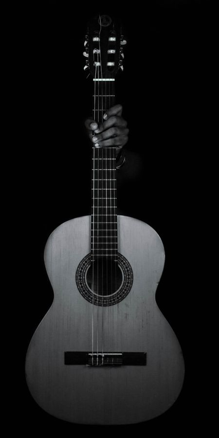
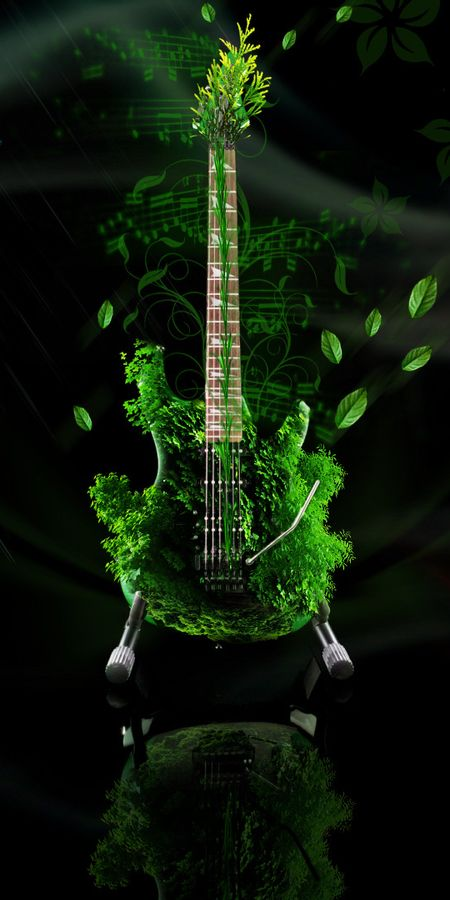
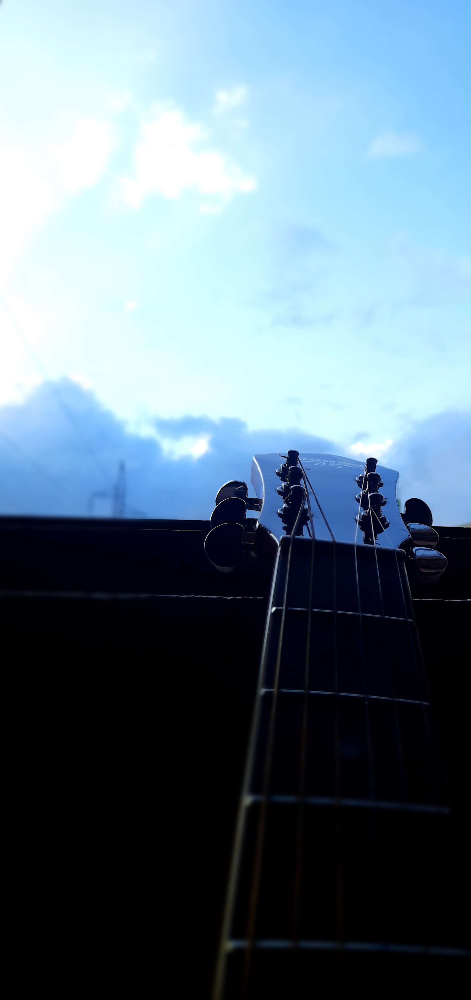
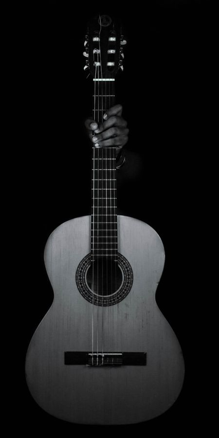
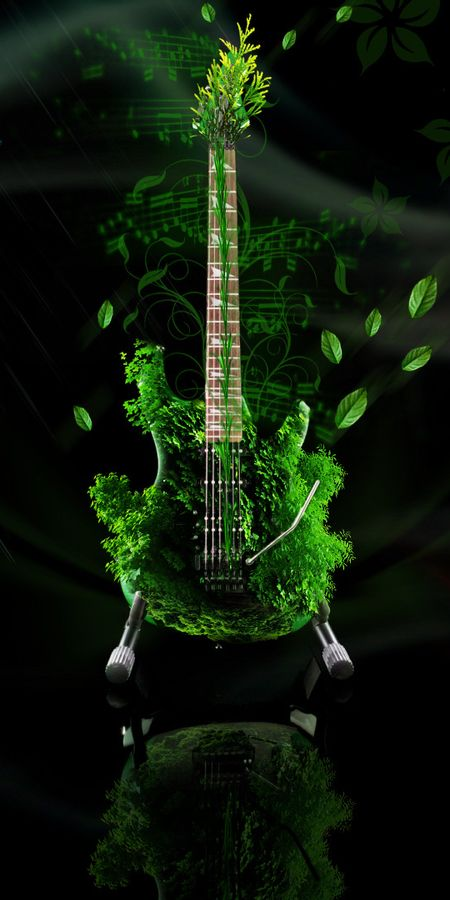
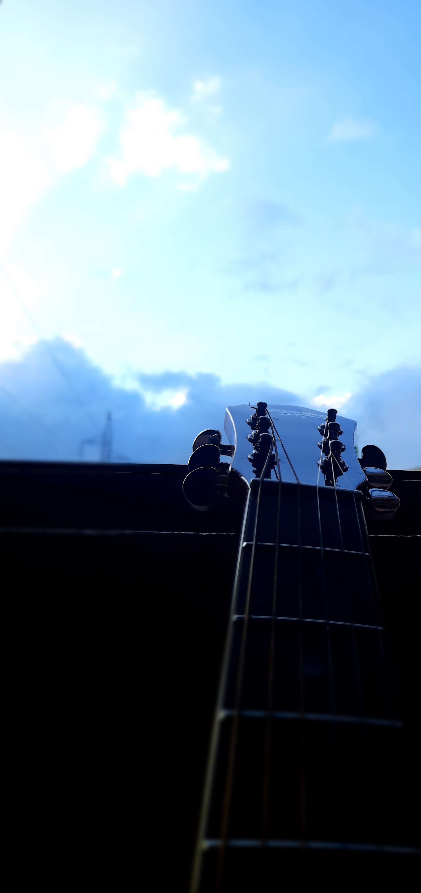

Birsiney Hau Ki - The Elements
Written and Composed by Ishan R.Onta
Capo On 1st fret
Intro: G C G C
Strumming Pattern: D U U D U U
Verse 1
G C
muskaan , timro muskaan yaada bho
G C
ghaama dhalke jhai, mann adhyaro bho
G C
Tasbir, timro tasbir baaki bho
G C
Sapana ma tarse jhai , mann attiyo
C G
Ota liye barsiyo jhari
C C
Sim sime paani , laagcha baadi
.............C G
katai farkinchau ta ma tirai timi?
C G
Aja le hijo birse jhai birsine ho ki
Music:
G C
chanchal yo chanchal mann timlai nai khojcha
G C
bhetdaina jaba ani yaad khotalcha
G C
hamra dui aakha lukamari khelchan
G C
Jun le ghaam na chiney jhai chindainan
C G
chutte ko dori lai k kasari baadhne?
C G
saatne ho ki yo maya nai tyagidine
C G
samaya chaiye leu, ghadi nai roki diye
C G
Aja le hijo birse jhai birsine ho ki
G C
Uhhhhh Uhhhhh Uhhhhh Uhhhh.....
G C
Uhhhhh Uhhhhh Uhhhhh Uhhhh.....
C G
ota liye barsiyo jhari
C G
Saatne ho ki yo maya nai tyagidine
C G
katai farkinchau ta ma tirai timi
C G
aja le hijo birse jhai birsine ho ki
C G
aja le hijo birse jhai birsine ho ki
C G
aja le hijo birse jhai birsine ho ki
End
Deep Meaning of the Song
This song conveys the deep emotions and complexities of a relationship. It speaks of missing the smile and image of a loved one, feeling a deep longing and emptiness without them. The lyrics question whether the person still thinks about them and whether they have truly moved on or still yearn for the past. The song highlights the restlessness of the singer's heart, their struggle to forget, and the difficulty of letting go. It reflects on the uncertainty of love and the desire to hold onto the relationship, even when time passes. Overall, it explores the pain of separation and the emotional turmoil experienced in love.